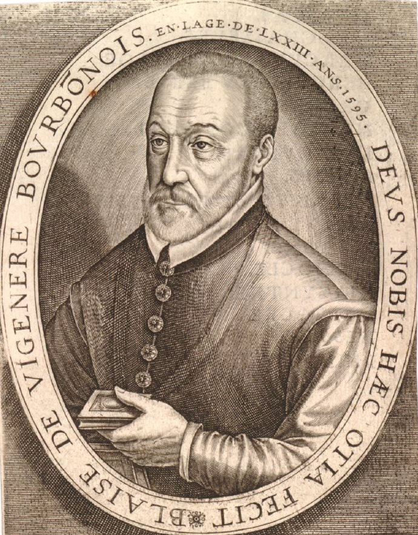
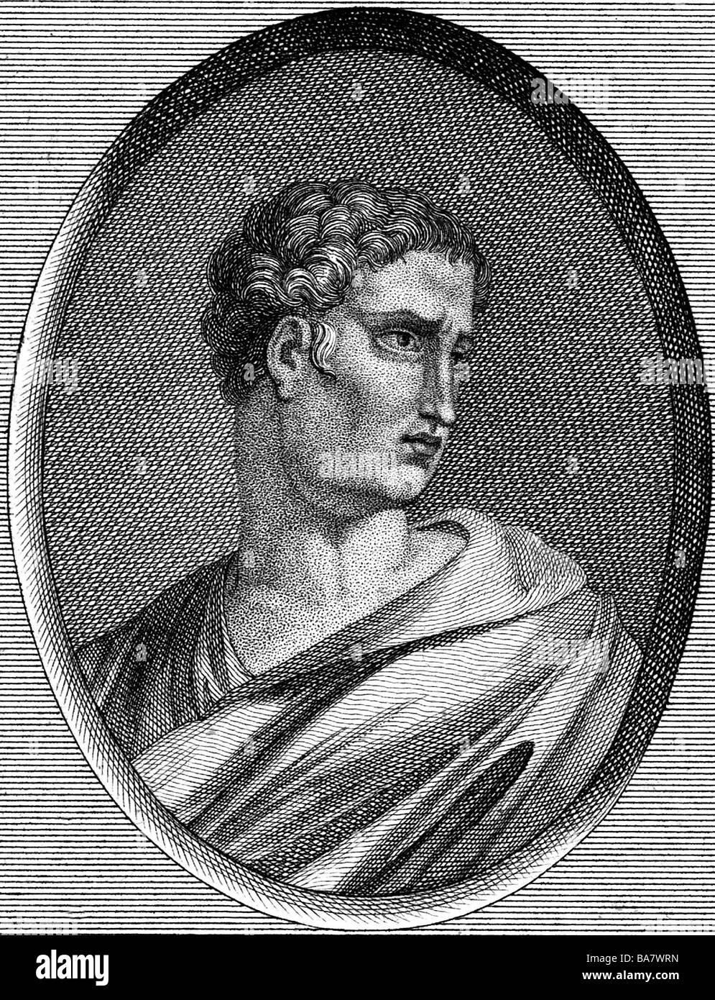
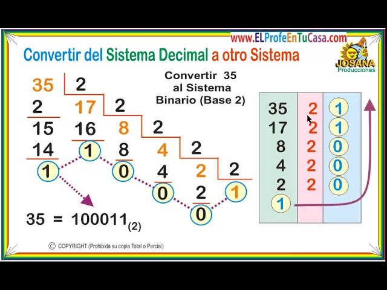

Cifrado Autoclave
Un cifrado de autollave (también conocido como cifrado de autoclave) es un cifrado que incorpora el mensaje (el texto sin formato) en la clave.
Cifrar y Descifrar

Cifrado Polybios
Este sistema es el primer cifrado por sustitución de caracteres. Se atribuye la invención a el historiador griego Polybios
Cifrar y DescifrarCifrado Vernam
El cifrado de Playfair es un método manual de criptografía simétrica por medio de sustitución. El sistema de cifrado toma pares de letras, o digramas, y las cambia mediante una tabla generada por una clave.
Cifrar y Descifrar
Cifrado Trasposicion
Es un tipo de cifrado en el que unidades de texto plano se cambian de posición siguiendo un esquema bien definido.
Cifrar y Descifrar

Cifrado Conversión Base
La codificación Base64 es una técnica que convierte datos binarios en un conjunto de caracteres ASCII.
Cifrar y Descifrar